Heritage
Ancient History Comes Alive Here
The rich heritage of India, one of the world oldest civilizations, is an all-embracing confluence of religions, traditions and customs. The highlights of Indian heritage lie in the treasure of its art, architecture, classical dance, music, flora and fauna, and the innate secular philosophy of its people.
Indian Heritage
The rich heritage of India, one of the world's oldest civilizations, is an all-embracing confluence of religions, traditions and customs.
Indian architecture is rooted in its history, culture and religion. Among a number of architectural styles and traditions, the best-known include the many varieties of Hindu temple architecture, Indo-Islamic architecture, especially Mughal architecture, Rajput architecture and Indo-Saracenic architecture. Much early Indian architecture was in wood, which has not survived. Instead the earliest survivals are from the many sites with Indian rock-cut architecture, most Buddhist but some Hindu and Jain.
Hindu temple architecture is mainly divided into the Dravidian style of the south and the Nagara style of the north, with other regional styles. Housing styles also vary between regions, partly depending on the different climates. Haveli is a general term for a large townhouse.
The first major Islamic kingdom in India was the Delhi Sultanate, which led to the development of Indo-Islamic architecture, combining Indian and Islamic features. The rule of the Mughal Empire, when Mughal architecture evolved, is regarded as the zenith of Indo-Islamic architecture, with the Taj Mahal being the high point of their contribution. Indo-Islamic architecture influenced the Rajput and Sikh styles as well.
Indian Architecture
Architecture is not a modern phenomenon. It began as soon as the early cave man began to build his own shelter to live in. Indian Architecture evolved in various ages in different parts and regions of the country. Caves, Stupas, Pillars, Temples and Indo-Islamic architecture are variety of architecture found in India which is a very important part in Indian art and architecture.
 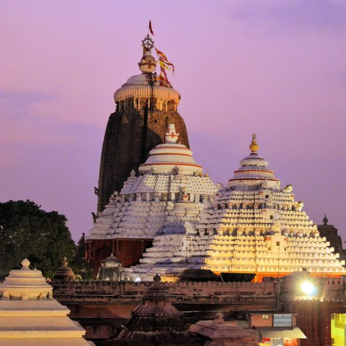
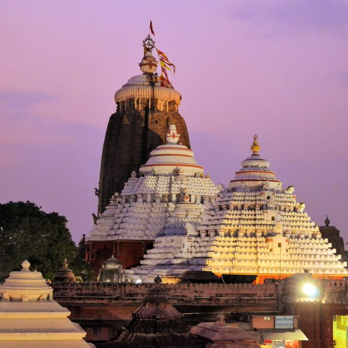
Types of architecture found in India
Caves, stupas, pillars, temples and Indo-Islamic architecture are variety of
architecture found in India which is a very important part in Indian art and
architecture.
→ Architecture
Cave architecture is often called as Rock-cut architecture. Indian rock-cut
architecture is one of the main forms of architecture seen in caves. It is the
practice of creating a structure by carving it out of solid natural rock. The
earliest caves were natural caves used by people for a variety of purposes such
as shrines and shelters. Indian rock-cut architecture is mostly religious in
nature. There are more than 1,500 rock-cut structures in India. Some of the
famous caves are : Ajanta Caves, Ellora Cave, Elephant Cave, Sudama /
Nyagodh Cave etc.
Major cave architectures in India
Stupa: A Stupa is a dome-shaped sacred burial mound of brick which was used
to house Buddha’s relics or to commemorate significant facts and events related
to Buddhism. Classification of Stupa: The stupas are classified into 5 main
categories on the basis of the purpose or occasion associated with them. These
are :
→ Relic Stupas: These stupas were constructed on bodily remains of Buddha,
his disciples and Bodhisattvas. These are the most sacred among all Buddhist
stupas.
→ Object Stupas: These stupas were built on personal belongings used by
Buddha, his disciples and Bodhisattvas. Begging bowl, robes and Buddhist
scriptures were kept in these stupas.
→ Commemorative Stupas: These stupas were built in the memory of important
events associated with the life of Buddha and Bodhisattvas.
→ Symbolic Stupas: Stupas of this category were built to symbolize the invisible
presence of Mahatma Buddha. These stupas reminded people that Buddha and
his Dharma were there with them always and everywhere. Relics or objects
were not used in these stupas.
→ Votive Stupas: These stupas were built by devotees at important Buddhist
centres and monasteries near the main stupas where they went there for
pilgrimage. The construction of these stupas was carried out to earn merit, i.e.,
to get the grace of God.
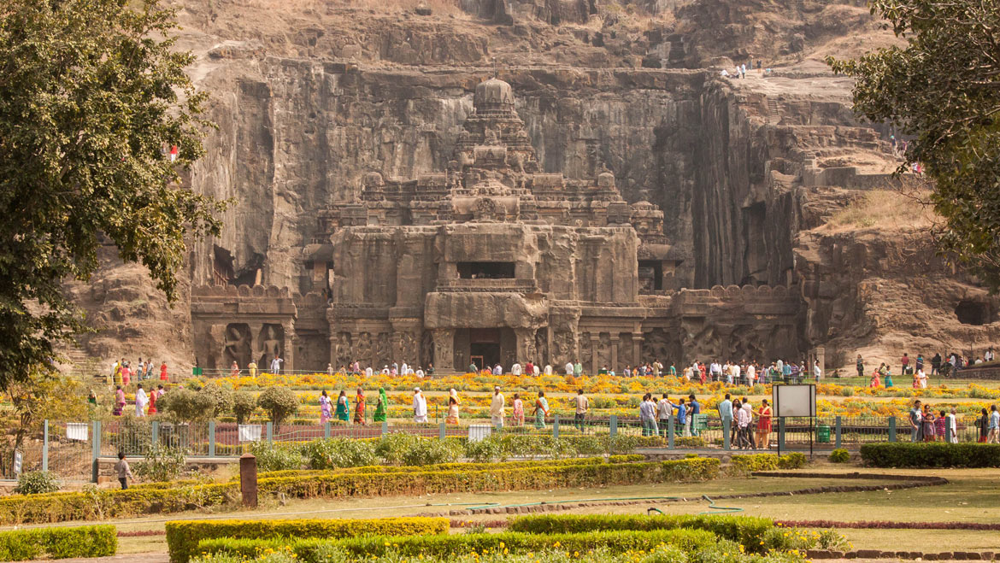 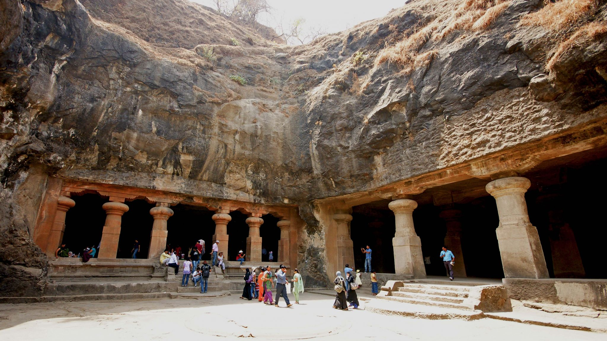 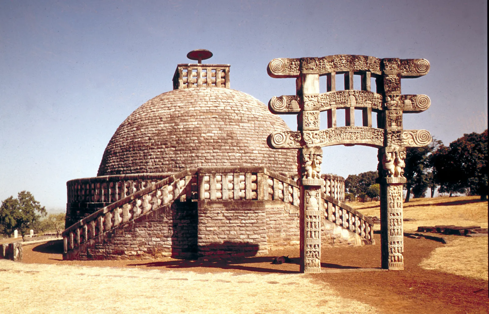
→ Pillar architecture:
Erection of pillars is an age-old tradition in India. Development in the field of
pillar architecture in a proper way commenced during the Mauryan age. The
Mauryan pillars were rock-cut. These had proclamations inscribed on them and
were used to spread the message of the Buddha by Emperor Ashoka.
The top
portion of the pillar is called capital and it typically has animal figures like bull,
lion, elephant, etc. These capital figures are carved standing on a square or
circular abacus. The abacuses are on the base which could be a stylised inverted
lotus. Example of pillars with capital figures: Sarnath, Basarah-Bakhira,
Rampurva, Sankisa and Lauriya-Nandangarh.
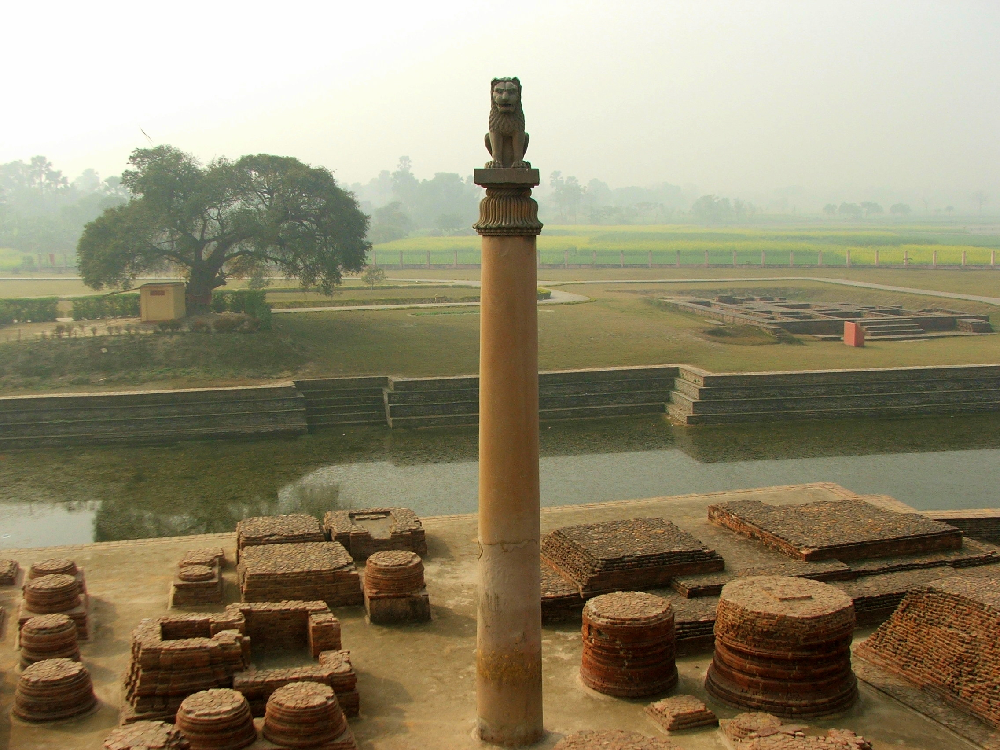 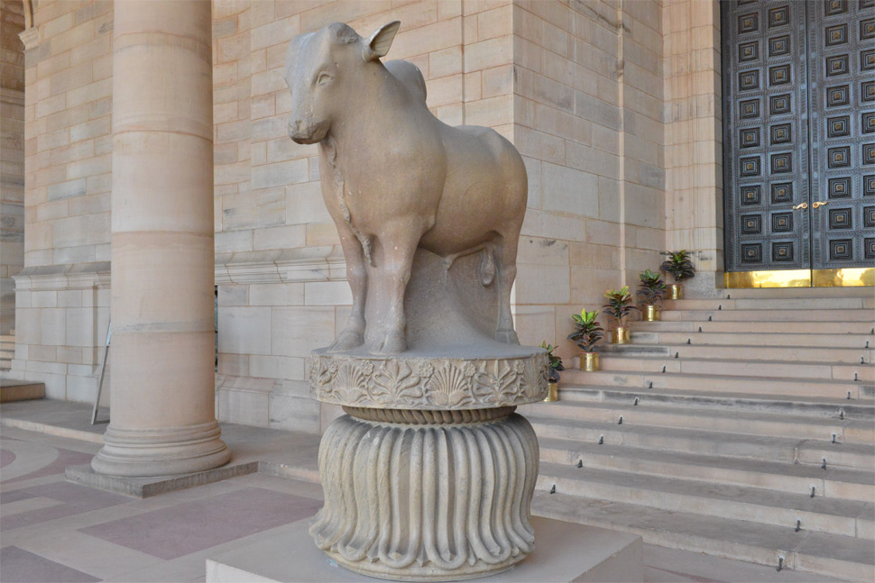 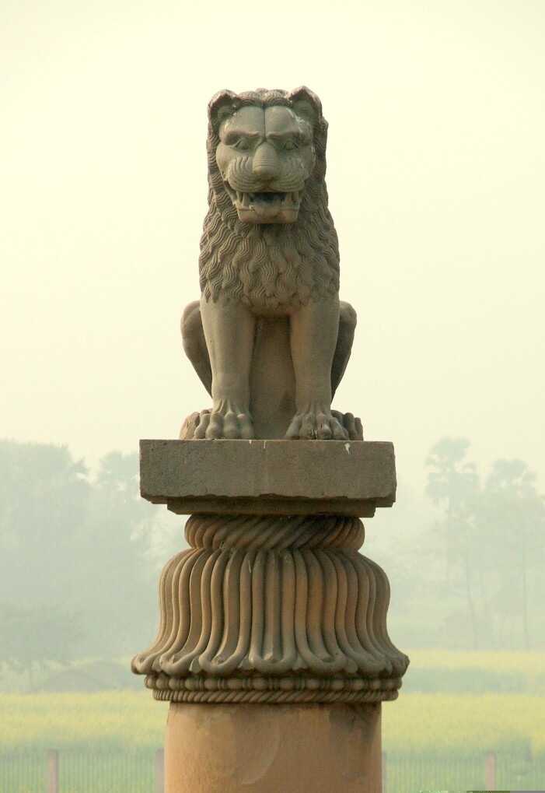 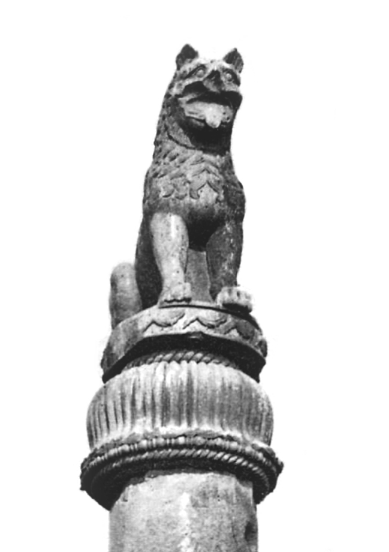
→Coins:
Coins issued by Indian rulers to the ages are important examples of human art
belonging to the ancient age because these coins of different types of symbols
on them. The coins throw light on the socio-economic, political and cultural life
of people belonging to that period. Coinage of India begin anywhere between
early first millennium BC to 6th century BC. These coins were popularly known
as punch marked coins because different symbols were inscribed on them using
punches.
The punch marked coins were irregular pieces of metal. Die-cast coins
were issued in India Saurashtra region in the 5th century BC. These coins were
called Karshapana because their weight was one karsha (unit of measurement)
each. The English word 'Cash' has originated from the word karsha only.
Punched mark coins were generally made of silver, while some were made of
copper also. Some of the most common symbols used on punch marked coins
were Sun mark. Crescent, Chakra, Swastika, Snake. During the post Mauryan
period, the most remarkable progress was witnessed in the ficld of coinage.
Indo-Greeks and Kushana rulers made immense contribution to the
development of coinage. Indo-Greeks were the first to issue gold coins in India.
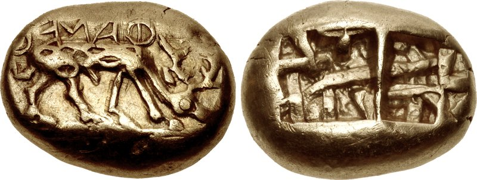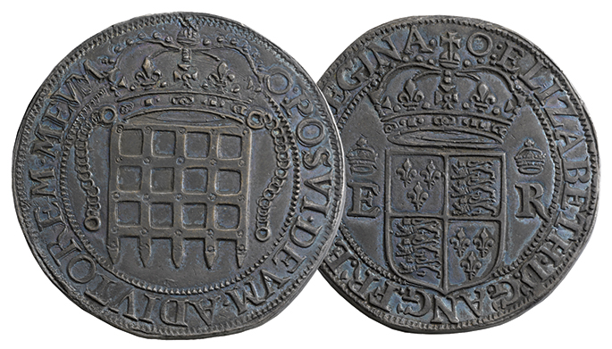